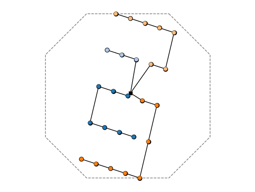

01: Onshore layout-to-LCOE#
In this example, we will demonstrate Ard's ability to run a layout-to-LCOE analysis and optimization.
We can start by loading what we need to run the problem.
from pathlib import Path # optional, for nice path specifications
import pprint as pp # optional, for nice printing
import numpy as np # numerics library
import matplotlib.pyplot as plt # plotting capabilities
import ard # technically we only really need this
from ard.utils.io import load_yaml # we grab a yaml loader here
from ard.api import set_up_ard_model # the secret sauce
from ard.viz.layout import plot_layout # a plotting tool!
import openmdao.api as om # for N2 diagrams from the OpenMDAO backend
%matplotlib inline
This will do for now. We can probably make it a bit cleaner for a later release.
Now, we can set up a case.
We do it a little verbosely so that our documentation system can grab it, you can generally just use relative paths.
We grab the file at inputs/ard_system.yaml, which describes the Ard system for this problem.
It references, in turn, the inputs/windio.yaml file, which is where we define the plant we want to optimize, and an initial setup for it.
# load input
path_inputs = Path.cwd().absolute() / "inputs"
input_dict = load_yaml(path_inputs / "ard_system.yaml")
# create and setup system
prob = set_up_ard_model(input_dict=input_dict, root_data_path=path_inputs)
Running OpenMDAO util to clean the output directories...
No OpenMDAO output directories found.
... done.
Created top-level OpenMDAO problem: top_level.
Adding top_level.
Adding layout2aep.
Adding layout to layout2aep.
Adding aepFLORIS to layout2aep.
Activating approximate totals on layout2aep
Adding boundary.
Adding landuse.
Adding collection.
Adding spacing_constraint.
Adding tcc.
Adding landbosse.
Adding opex.
Adding financese.
System top_level built.
System top_level set up.
Here, you should see each of the groups or components described as they are added to the Ard model and, occasionally, some options being turned on on them, like semi-total finite differencing on groups.
Next is some code you can flip on to use the N2 diagram vizualization tools from the backend toolset, OpenMDAO, that we use. This can be a really handy debugging tool, if somewhat tricky to use; turned on it will show a comprehensive view of the system in terms of its components, variables, and connections, although we leave it off for now.
if False:
# visualize model
om.n2(prob)
Now, we do a one-shot analysis.
The one-shot analysis will run a wind farm as specified in inputs/windio.yaml and with the models specified in inputs/ard_system.yaml, then dump the outputs.
# run the model
prob.run_model()
# collapse the test result data
test_data = {
"AEP_val": float(prob.get_val("AEP_farm", units="GW*h")[0]),
"CapEx_val": float(prob.get_val("tcc.tcc", units="MUSD")[0]),
"BOS_val": float(prob.get_val("landbosse.total_capex", units="MUSD")[0]),
"OpEx_val": float(prob.get_val("opex.opex", units="MUSD/yr")[0]),
"LCOE_val": float(prob.get_val("financese.lcoe", units="USD/MW/h")[0]),
"area_tight": float(prob.get_val("landuse.area_tight", units="km**2")[0]),
"coll_length": float(prob.get_val("collection.total_length_cables", units="km")[0]),
"turbine_spacing": float(
np.min(prob.get_val("spacing_constraint.turbine_spacing", units="km"))
),
}
print("\n\nRESULTS:\n")
pp.pprint(test_data)
print("\n\n")
RESULTS:
{'AEP_val': 406.53718092931325,
'BOS_val': 41.68227106807093,
'CapEx_val': 110.5,
'LCOE_val': 37.274992401593316,
'OpEx_val': 3.7400000000000007,
'area_tight': 13.2496,
'coll_length': 21.89865877023397,
'turbine_spacing': 0.91}
Now, we can optimize the same problem!
The optimization details are set under the analysis_options header in inputs/ard_system.yaml.
Here, we use a four-dimensional rectilinear layout parameterization (\(\theta\)) as design variables, constrain the farm such that the turbines are in the boundaries and satisfactorily spaced, and then we optimize for LCOE.
$\(
\begin{aligned}
\textrm{minimize}_\theta \quad & \mathrm{LCOE}(\theta, \ldots) \\
\textrm{subject to} \quad & f_{\mathrm{spacing}}(\theta, \ldots) < 0 \\
& f_{\mathrm{boundary}}(\theta, \ldots) < 0
\end{aligned}
\)$
optimize = True # set to False to skip optimization
if optimize:
# run the optimization
prob.run_driver()
prob.cleanup()
# collapse the test result data
test_data = {
"AEP_val": float(prob.get_val("AEP_farm", units="GW*h")[0]),
"CapEx_val": float(prob.get_val("tcc.tcc", units="MUSD")[0]),
"BOS_val": float(prob.get_val("landbosse.total_capex", units="MUSD")[0]),
"OpEx_val": float(prob.get_val("opex.opex", units="MUSD/yr")[0]),
"LCOE_val": float(prob.get_val("financese.lcoe", units="USD/MW/h")[0]),
"area_tight": float(prob.get_val("landuse.area_tight", units="km**2")[0]),
"coll_length": float(
prob.get_val("collection.total_length_cables", units="km")[0]
),
"turbine_spacing": float(
np.min(prob.get_val("spacing_constraint.turbine_spacing", units="km"))
),
}
# clean up the recorder
prob.cleanup()
# print the results
print("\n\nRESULTS (opt):\n")
pp.pprint(test_data)
print("\n\n")
Driver debug print for iter coord: rank0:ScipyOptimize_COBYLA|0
---------------------------------------------------------------
Design Vars
{'angle_orientation': array([0.]),
'angle_skew': array([0.]),
'spacing_primary': array([7.]),
'spacing_secondary': array([7.])}
Objectives
{'financese.lcoe': array([0.03727499])}
Driver debug print for iter coord: rank0:ScipyOptimize_COBYLA|1
---------------------------------------------------------------
Design Vars
{'angle_orientation': array([0.]),
'angle_skew': array([0.]),
'spacing_primary': array([7.]),
'spacing_secondary': array([7.])}
Objectives
{'financese.lcoe': array([0.03727499])}
Driver debug print for iter coord: rank0:ScipyOptimize_COBYLA|2
---------------------------------------------------------------
Design Vars
{'angle_orientation': array([0.]),
'angle_skew': array([0.]),
'spacing_primary': array([9.]),
'spacing_secondary': array([7.])}
Objectives
{'financese.lcoe': array([0.03624933])}
Driver debug print for iter coord: rank0:ScipyOptimize_COBYLA|3
---------------------------------------------------------------
Design Vars
{'angle_orientation': array([0.]),
'angle_skew': array([0.]),
'spacing_primary': array([9.]),
'spacing_secondary': array([9.])}
Objectives
{'financese.lcoe': array([0.03617557])}
Driver debug print for iter coord: rank0:ScipyOptimize_COBYLA|4
---------------------------------------------------------------
Design Vars
{'angle_orientation': array([2.]),
'angle_skew': array([0.]),
'spacing_primary': array([9.]),
'spacing_secondary': array([9.])}
Objectives
{'financese.lcoe': array([0.03584399])}
Driver debug print for iter coord: rank0:ScipyOptimize_COBYLA|5
---------------------------------------------------------------
Design Vars
{'angle_orientation': array([2.]),
'angle_skew': array([2.]),
'spacing_primary': array([9.]),
'spacing_secondary': array([9.])}
Objectives
{'financese.lcoe': array([0.03571624])}
Driver debug print for iter coord: rank0:ScipyOptimize_COBYLA|6
---------------------------------------------------------------
Design Vars
{'angle_orientation': array([2.86472422]),
'angle_skew': array([0.06259609]),
'spacing_primary': array([9.88434648]),
'spacing_secondary': array([7.42956533])}
Objectives
{'financese.lcoe': array([0.03531045])}
Driver debug print for iter coord: rank0:ScipyOptimize_COBYLA|7
---------------------------------------------------------------
Design Vars
{'angle_orientation': array([6.22500644]),
'angle_skew': array([1.28475337]),
'spacing_primary': array([11.09633086]),
'spacing_secondary': array([6.10822931])}
Objectives
{'financese.lcoe': array([0.03366195])}
Driver debug print for iter coord: rank0:ScipyOptimize_COBYLA|8
---------------------------------------------------------------
Design Vars
{'angle_orientation': array([12.81882311]),
'angle_skew': array([5.39820403]),
'spacing_primary': array([10.77915018]),
'spacing_secondary': array([4.23726651])}
Objectives
{'financese.lcoe': array([0.03365145])}
Driver debug print for iter coord: rank0:ScipyOptimize_COBYLA|9
---------------------------------------------------------------
Design Vars
{'angle_orientation': array([12.83988667]),
'angle_skew': array([5.23032385]),
'spacing_primary': array([10.44358609]),
'spacing_secondary': array([4.22816309])}
Objectives
{'financese.lcoe': array([0.03363835])}
Driver debug print for iter coord: rank0:ScipyOptimize_COBYLA|10
----------------------------------------------------------------
Design Vars
{'angle_orientation': array([13.94202666]),
'angle_skew': array([3.93005956]),
'spacing_primary': array([10.90864465]),
'spacing_secondary': array([5.16535077])}
Objectives
{'financese.lcoe': array([0.03405059])}
Driver debug print for iter coord: rank0:ScipyOptimize_COBYLA|11
----------------------------------------------------------------
Design Vars
{'angle_orientation': array([12.90194161]),
'angle_skew': array([4.76648269]),
'spacing_primary': array([10.70246065]),
'spacing_secondary': array([3.38318704])}
Objectives
{'financese.lcoe': array([0.03471409])}
Driver debug print for iter coord: rank0:ScipyOptimize_COBYLA|12
----------------------------------------------------------------
Design Vars
{'angle_orientation': array([12.52571202]),
'angle_skew': array([6.3536025]),
'spacing_primary': array([9.75084548]),
'spacing_secondary': array([5.6977378])}
Objectives
{'financese.lcoe': array([0.03373359])}
Driver debug print for iter coord: rank0:ScipyOptimize_COBYLA|13
----------------------------------------------------------------
Design Vars
{'angle_orientation': array([13.67256057]),
'angle_skew': array([5.6910892]),
'spacing_primary': array([10.27225228]),
'spacing_secondary': array([3.97322353])}
Objectives
{'financese.lcoe': array([0.03377757])}
Driver debug print for iter coord: rank0:ScipyOptimize_COBYLA|14
----------------------------------------------------------------
Design Vars
{'angle_orientation': array([10.8927786]),
'angle_skew': array([5.29008994]),
'spacing_primary': array([9.99059916]),
'spacing_secondary': array([4.22716261])}
Objectives
{'financese.lcoe': array([0.03393982])}
Driver debug print for iter coord: rank0:ScipyOptimize_COBYLA|15
----------------------------------------------------------------
Design Vars
{'angle_orientation': array([13.41457861]),
'angle_skew': array([5.93890059]),
'spacing_primary': array([10.03417807]),
'spacing_secondary': array([4.22239708])}
Objectives
{'financese.lcoe': array([0.0337511])}
Driver debug print for iter coord: rank0:ScipyOptimize_COBYLA|16
----------------------------------------------------------------
Design Vars
{'angle_orientation': array([12.67088954]),
'angle_skew': array([5.33272718]),
'spacing_primary': array([10.38559164]),
'spacing_secondary': array([4.0864233])}
Objectives
{'financese.lcoe': array([0.03370377])}
Driver debug print for iter coord: rank0:ScipyOptimize_COBYLA|17
----------------------------------------------------------------
Design Vars
{'angle_orientation': array([13.04084768]),
'angle_skew': array([4.83585161]),
'spacing_primary': array([10.43290127]),
'spacing_secondary': array([4.46030995])}
Objectives
{'financese.lcoe': array([0.03369443])}
Driver debug print for iter coord: rank0:ScipyOptimize_COBYLA|18
----------------------------------------------------------------
Design Vars
{'angle_orientation': array([12.88821808]),
'angle_skew': array([5.20604702]),
'spacing_primary': array([10.4609978]),
'spacing_secondary': array([4.14587371])}
Objectives
{'financese.lcoe': array([0.03365535])}
Driver debug print for iter coord: rank0:ScipyOptimize_COBYLA|19
----------------------------------------------------------------
Design Vars
{'angle_orientation': array([12.96406517]),
'angle_skew': array([5.35886852]),
'spacing_primary': array([10.37785176]),
'spacing_secondary': array([4.28927746])}
Objectives
{'financese.lcoe': array([0.03365216])}
Driver debug print for iter coord: rank0:ScipyOptimize_COBYLA|20
----------------------------------------------------------------
Design Vars
{'angle_orientation': array([12.8394481]),
'angle_skew': array([5.10326124]),
'spacing_primary': array([10.44388916]),
'spacing_secondary': array([4.38261312])}
Objectives
{'financese.lcoe': array([0.0336646])}
Driver debug print for iter coord: rank0:ScipyOptimize_COBYLA|21
----------------------------------------------------------------
Design Vars
{'angle_orientation': array([12.92225784]),
'angle_skew': array([5.17997348]),
'spacing_primary': array([10.46965185]),
'spacing_secondary': array([4.22880082])}
Objectives
{'financese.lcoe': array([0.03362823])}
Driver debug print for iter coord: rank0:ScipyOptimize_COBYLA|22
----------------------------------------------------------------
Design Vars
{'angle_orientation': array([12.99701442]),
'angle_skew': array([5.11395508]),
'spacing_primary': array([10.47691928]),
'spacing_secondary': array([4.2292597])}
Objectives
{'financese.lcoe': array([0.03361972])}
Driver debug print for iter coord: rank0:ScipyOptimize_COBYLA|23
----------------------------------------------------------------
Design Vars
{'angle_orientation': array([13.12764275]),
'angle_skew': array([4.96260565]),
'spacing_primary': array([10.47157373]),
'spacing_secondary': array([4.2302662])}
Objectives
{'financese.lcoe': array([0.03360435])}
Driver debug print for iter coord: rank0:ScipyOptimize_COBYLA|24
----------------------------------------------------------------
Design Vars
{'angle_orientation': array([13.12463349]),
'angle_skew': array([4.96025142]),
'spacing_primary': array([10.46376264]),
'spacing_secondary': array([4.2253277])}
Objectives
{'financese.lcoe': array([0.03360555])}
Driver debug print for iter coord: rank0:ScipyOptimize_COBYLA|25
----------------------------------------------------------------
Design Vars
{'angle_orientation': array([13.14120451]),
'angle_skew': array([4.96192242]),
'spacing_primary': array([10.48625744]),
'spacing_secondary': array([4.23024413])}
Objectives
{'financese.lcoe': array([0.03360266])}
Driver debug print for iter coord: rank0:ScipyOptimize_COBYLA|26
----------------------------------------------------------------
Design Vars
{'angle_orientation': array([13.13957513]),
'angle_skew': array([4.94650637]),
'spacing_primary': array([10.49136767]),
'spacing_secondary': array([4.24180164])}
Objectives
{'financese.lcoe': array([0.03360003])}
Driver debug print for iter coord: rank0:ScipyOptimize_COBYLA|27
----------------------------------------------------------------
Design Vars
{'angle_orientation': array([13.15527431]),
'angle_skew': array([4.92960929]),
'spacing_primary': array([10.48210297]),
'spacing_secondary': array([4.27314155])}
Objectives
{'financese.lcoe': array([0.03359656])}
Driver debug print for iter coord: rank0:ScipyOptimize_COBYLA|28
----------------------------------------------------------------
Design Vars
{'angle_orientation': array([13.16451917]),
'angle_skew': array([4.89566594]),
'spacing_primary': array([10.47840199]),
'spacing_secondary': array([4.29181465])}
Objectives
{'financese.lcoe': array([0.03359527])}
Driver debug print for iter coord: rank0:ScipyOptimize_COBYLA|29
----------------------------------------------------------------
Design Vars
{'angle_orientation': array([13.20261228]),
'angle_skew': array([4.90260245]),
'spacing_primary': array([10.47385849]),
'spacing_secondary': array([4.30076766])}
Objectives
{'financese.lcoe': array([0.03359673])}
Driver debug print for iter coord: rank0:ScipyOptimize_COBYLA|30
----------------------------------------------------------------
Design Vars
{'angle_orientation': array([13.16423617]),
'angle_skew': array([4.89494409]),
'spacing_primary': array([10.46891109]),
'spacing_secondary': array([4.28876152])}
Objectives
{'financese.lcoe': array([0.03359644])}
Driver debug print for iter coord: rank0:ScipyOptimize_COBYLA|31
----------------------------------------------------------------
Design Vars
{'angle_orientation': array([13.15528379]),
'angle_skew': array([4.89877187]),
'spacing_primary': array([10.47314921]),
'spacing_secondary': array([4.30847205])}
Objectives
{'financese.lcoe': array([0.03360017])}
Driver debug print for iter coord: rank0:ScipyOptimize_COBYLA|32
----------------------------------------------------------------
Design Vars
{'angle_orientation': array([13.16569403]),
'angle_skew': array([4.88603527]),
'spacing_primary': array([10.47832049]),
'spacing_secondary': array([4.29423606])}
Objectives
{'financese.lcoe': array([0.03359499])}
Driver debug print for iter coord: rank0:ScipyOptimize_COBYLA|33
----------------------------------------------------------------
Design Vars
{'angle_orientation': array([13.16880044]),
'angle_skew': array([4.87969641]),
'spacing_primary': array([10.48438699]),
'spacing_secondary': array([4.27653389])}
Objectives
{'financese.lcoe': array([0.03359292])}
Driver debug print for iter coord: rank0:ScipyOptimize_COBYLA|34
----------------------------------------------------------------
Design Vars
{'angle_orientation': array([13.1679634]),
'angle_skew': array([4.86999574]),
'spacing_primary': array([10.49038364]),
'spacing_secondary': array([4.26012546])}
Objectives
{'financese.lcoe': array([0.03359213])}
Driver debug print for iter coord: rank0:ScipyOptimize_COBYLA|35
----------------------------------------------------------------
Design Vars
{'angle_orientation': array([13.1666634]),
'angle_skew': array([4.85135315]),
'spacing_primary': array([10.48959017]),
'spacing_secondary': array([4.26720601])}
Objectives
{'financese.lcoe': array([0.03359098])}
Driver debug print for iter coord: rank0:ScipyOptimize_COBYLA|36
----------------------------------------------------------------
Design Vars
{'angle_orientation': array([13.15210061]),
'angle_skew': array([4.83786941]),
'spacing_primary': array([10.491516]),
'spacing_secondary': array([4.26565512])}
Objectives
{'financese.lcoe': array([0.03359094])}
Driver debug print for iter coord: rank0:ScipyOptimize_COBYLA|37
----------------------------------------------------------------
Design Vars
{'angle_orientation': array([13.16543854]),
'angle_skew': array([4.82313597]),
'spacing_primary': array([10.49279286]),
'spacing_secondary': array([4.26381255])}
Objectives
{'financese.lcoe': array([0.03358932])}
Driver debug print for iter coord: rank0:ScipyOptimize_COBYLA|38
----------------------------------------------------------------
Design Vars
{'angle_orientation': array([13.19149549]),
'angle_skew': array([4.79297605]),
'spacing_primary': array([10.49319265]),
'spacing_secondary': array([4.26716739])}
Objectives
{'financese.lcoe': array([0.03358631])}
Driver debug print for iter coord: rank0:ScipyOptimize_COBYLA|39
----------------------------------------------------------------
Design Vars
{'angle_orientation': array([13.23709515]),
'angle_skew': array([4.72761791]),
'spacing_primary': array([10.49453877]),
'spacing_secondary': array([4.27403554])}
Objectives
{'financese.lcoe': array([0.03357978])}
Driver debug print for iter coord: rank0:ScipyOptimize_COBYLA|40
----------------------------------------------------------------
Design Vars
{'angle_orientation': array([13.34992893]),
'angle_skew': array([4.62674163]),
'spacing_primary': array([10.48265698]),
'spacing_secondary': array([4.32454631])}
Objectives
{'financese.lcoe': array([0.03358066])}
Driver debug print for iter coord: rank0:ScipyOptimize_COBYLA|41
----------------------------------------------------------------
Design Vars
{'angle_orientation': array([13.24155224]),
'angle_skew': array([4.71541194]),
'spacing_primary': array([10.42792488]),
'spacing_secondary': array([4.231683])}
Objectives
{'financese.lcoe': array([0.0335894])}
Driver debug print for iter coord: rank0:ScipyOptimize_COBYLA|42
----------------------------------------------------------------
Design Vars
{'angle_orientation': array([13.23811784]),
'angle_skew': array([4.72679589]),
'spacing_primary': array([10.50540182]),
'spacing_secondary': array([4.2572942])}
Objectives
{'financese.lcoe': array([0.03358095])}
Driver debug print for iter coord: rank0:ScipyOptimize_COBYLA|43
----------------------------------------------------------------
Design Vars
{'angle_orientation': array([13.25596624]),
'angle_skew': array([4.71125921]),
'spacing_primary': array([10.48568256]),
'spacing_secondary': array([4.30399956])}
Objectives
{'financese.lcoe': array([0.03358315])}
Driver debug print for iter coord: rank0:ScipyOptimize_COBYLA|44
----------------------------------------------------------------
Design Vars
{'angle_orientation': array([13.23080699]),
'angle_skew': array([4.72371919]),
'spacing_primary': array([10.50026865]),
'spacing_secondary': array([4.27756082])}
Objectives
{'financese.lcoe': array([0.03357927])}
Driver debug print for iter coord: rank0:ScipyOptimize_COBYLA|45
----------------------------------------------------------------
Design Vars
{'angle_orientation': array([13.22699505]),
'angle_skew': array([4.71697129]),
'spacing_primary': array([10.48239125]),
'spacing_secondary': array([4.2679466])}
Objectives
{'financese.lcoe': array([0.03358189])}
Driver debug print for iter coord: rank0:ScipyOptimize_COBYLA|46
----------------------------------------------------------------
Design Vars
{'angle_orientation': array([13.22724752]),
'angle_skew': array([4.74409999]),
'spacing_primary': array([10.49201611]),
'spacing_secondary': array([4.27903568])}
Objectives
{'financese.lcoe': array([0.0335816])}
Driver debug print for iter coord: rank0:ScipyOptimize_COBYLA|47
----------------------------------------------------------------
Design Vars
{'angle_orientation': array([13.24344359]),
'angle_skew': array([4.72280238]),
'spacing_primary': array([10.4928713]),
'spacing_secondary': array([4.27984309])}
Objectives
{'financese.lcoe': array([0.03357971])}
Driver debug print for iter coord: rank0:ScipyOptimize_COBYLA|48
----------------------------------------------------------------
Design Vars
{'angle_orientation': array([13.2427772]),
'angle_skew': array([4.72598493]),
'spacing_primary': array([10.49152263]),
'spacing_secondary': array([4.28339392])}
Objectives
{'financese.lcoe': array([0.03358035])}
Driver debug print for iter coord: rank0:ScipyOptimize_COBYLA|49
----------------------------------------------------------------
Design Vars
{'angle_orientation': array([13.24392415]),
'angle_skew': array([4.72320103]),
'spacing_primary': array([10.49365187]),
'spacing_secondary': array([4.27987245])}
Objectives
{'financese.lcoe': array([0.03357958])}
Driver debug print for iter coord: rank0:ScipyOptimize_COBYLA|50
----------------------------------------------------------------
Design Vars
{'angle_orientation': array([13.24469799]),
'angle_skew': array([4.72225021]),
'spacing_primary': array([10.49335817]),
'spacing_secondary': array([4.27831976])}
Objectives
{'financese.lcoe': array([0.03357947])}
Return from COBYLA because the objective function has been evaluated MAXFUN times.
Number of function values = 50 Least value of F = 0.0335794682135101 Constraint violation = 0.0
The corresponding X is:
[10.49335817 4.27831976 13.24469799 4.72225021]
The constraint value is:
[-7.49335817e+00 -1.27831976e+00 -1.93244698e+02 -4.97222502e+01
-9.50664183e+00 -1.57216802e+01 -1.66755302e+02 -4.02777498e+01
-7.09648637e-01 -3.02950880e+00 -3.87655542e+00 -2.65570264e+00
-4.88281250e-07 -1.03289307e+00 -3.53680483e+00 -4.93827771e+00
-3.00000024e+00 -3.44297852e-01 -6.88595215e-01 -3.34429761e+00
-5.99999604e+00 -3.34429761e+00 -6.88595215e-01 -3.44297852e-01
-3.00000024e+00 -4.93827771e+00 -3.53680483e+00 -1.03289307e+00
-4.88281250e-07 -2.65570264e+00 -3.87655542e+00 -3.02950880e+00
-7.09648637e-01 -8.12136562e-01 -2.17627312e+00 -3.54040969e+00
-4.90454625e+00 -6.07596242e-03 -8.78723532e-01 -2.18738460e+00
-3.53251016e+00 -4.88711350e+00 -5.64151925e-01 -1.13796114e+00
-2.30944706e+00 -3.60029179e+00 -4.92676920e+00 -1.12222789e+00
-1.51871607e+00 -2.52930300e+00 -3.74017060e+00 -5.02229509e+00
-1.68030385e+00 -1.96646361e+00 -2.82792228e+00 -3.94542452e+00
-5.17089413e+00 -8.12136562e-01 -2.17627312e+00 -3.54040969e+00
-9.63805019e-01 -6.07596242e-03 -8.78723532e-01 -2.18738460e+00
-3.53251016e+00 -1.28030967e+00 -5.64151925e-01 -1.13796114e+00
-2.30944706e+00 -3.60029179e+00 -1.69298332e+00 -1.12222789e+00
-1.51871607e+00 -2.52930300e+00 -3.74017060e+00 -2.15824705e+00
-1.68030385e+00 -1.96646361e+00 -2.82792228e+00 -3.94542452e+00
-8.12136562e-01 -2.17627312e+00 -2.27742009e+00 -9.63805019e-01
-6.07596242e-03 -8.78723532e-01 -2.18738460e+00 -2.47961004e+00
-1.28030967e+00 -5.64151925e-01 -1.13796114e+00 -2.30944706e+00
-2.76441348e+00 -1.69298332e+00 -1.12222789e+00 -1.51871607e+00
-2.52930300e+00 -3.11261933e+00 -2.15824705e+00 -1.68030385e+00
-1.96646361e+00 -2.82792228e+00 -8.12136562e-01 -3.62356084e+00
-2.27742009e+00 -9.63805019e-01 -6.07596242e-03 -8.78723532e-01
-3.77763015e+00 -2.47961004e+00 -1.28030967e+00 -5.64151925e-01
-1.13796114e+00 -3.99541506e+00 -2.76441348e+00 -1.69298332e+00
-1.12222789e+00 -1.51871607e+00 -4.26828710e+00 -3.11261933e+00
-2.15824705e+00 -1.68030385e+00 -1.96646361e+00 -4.97852762e+00
-3.62356084e+00 -2.27742009e+00 -9.63805019e-01 -6.07596242e-03
-5.10684018e+00 -3.77763015e+00 -2.47961004e+00 -1.28030967e+00
-5.64151925e-01 -5.28590255e+00 -3.99541506e+00 -2.76441348e+00
-1.69298332e+00 -1.12222789e+00 -5.51122008e+00 -4.26828710e+00
-3.11261933e+00 -2.15824705e+00 -1.68030385e+00 -8.12136562e-01
-2.17627312e+00 -3.54040969e+00 -4.90454625e+00 -6.07596242e-03
-8.78723532e-01 -2.18738460e+00 -3.53251016e+00 -4.88711350e+00
-5.64151925e-01 -1.13796114e+00 -2.30944706e+00 -3.60029179e+00
-4.92676920e+00 -1.12222789e+00 -1.51871607e+00 -2.52930300e+00
-3.74017060e+00 -5.02229509e+00 -8.12136562e-01 -2.17627312e+00
-3.54040969e+00 -9.63805019e-01 -6.07596242e-03 -8.78723532e-01
-2.18738460e+00 -3.53251016e+00 -1.28030967e+00 -5.64151925e-01
-1.13796114e+00 -2.30944706e+00 -3.60029179e+00 -1.69298332e+00
-1.12222789e+00 -1.51871607e+00 -2.52930300e+00 -3.74017060e+00
-8.12136562e-01 -2.17627312e+00 -2.27742009e+00 -9.63805019e-01
-6.07596242e-03 -8.78723532e-01 -2.18738460e+00 -2.47961004e+00
-1.28030967e+00 -5.64151925e-01 -1.13796114e+00 -2.30944706e+00
-2.76441348e+00 -1.69298332e+00 -1.12222789e+00 -1.51871607e+00
-2.52930300e+00 -8.12136562e-01 -3.62356084e+00 -2.27742009e+00
-9.63805019e-01 -6.07596242e-03 -8.78723532e-01 -3.77763015e+00
-2.47961004e+00 -1.28030967e+00 -5.64151925e-01 -1.13796114e+00
-3.99541506e+00 -2.76441348e+00 -1.69298332e+00 -1.12222789e+00
-1.51871607e+00 -4.97852762e+00 -3.62356084e+00 -2.27742009e+00
-9.63805019e-01 -6.07596242e-03 -5.10684018e+00 -3.77763015e+00
-2.47961004e+00 -1.28030967e+00 -5.64151925e-01 -5.28590255e+00
-3.99541506e+00 -2.76441348e+00 -1.69298332e+00 -1.12222789e+00
-8.12136562e-01 -2.17627312e+00 -3.54040969e+00 -4.90454625e+00
-6.07596242e-03 -8.78723532e-01 -2.18738460e+00 -3.53251016e+00
-4.88711350e+00 -5.64151925e-01 -1.13796114e+00 -2.30944706e+00
-3.60029179e+00 -4.92676920e+00 -8.12136562e-01 -2.17627312e+00
-3.54040969e+00 -9.63805019e-01 -6.07596242e-03 -8.78723532e-01
-2.18738460e+00 -3.53251016e+00 -1.28030967e+00 -5.64151925e-01
-1.13796114e+00 -2.30944706e+00 -3.60029179e+00 -8.12136562e-01
-2.17627312e+00 -2.27742009e+00 -9.63805019e-01 -6.07596242e-03
-8.78723532e-01 -2.18738460e+00 -2.47961004e+00 -1.28030967e+00
-5.64151925e-01 -1.13796114e+00 -2.30944706e+00 -8.12136562e-01
-3.62356084e+00 -2.27742009e+00 -9.63805019e-01 -6.07596242e-03
-8.78723532e-01 -3.77763015e+00 -2.47961004e+00 -1.28030967e+00
-5.64151925e-01 -1.13796114e+00 -4.97852762e+00 -3.62356084e+00
-2.27742009e+00 -9.63805019e-01 -6.07596242e-03 -5.10684018e+00
-3.77763015e+00 -2.47961004e+00 -1.28030967e+00 -5.64151925e-01
-8.12136562e-01 -2.17627312e+00 -3.54040969e+00 -4.90454625e+00
-6.07596242e-03 -8.78723532e-01 -2.18738460e+00 -3.53251016e+00
-4.88711350e+00 -8.12136562e-01 -2.17627312e+00 -3.54040969e+00
-9.63805019e-01 -6.07596242e-03 -8.78723532e-01 -2.18738460e+00
-3.53251016e+00 -8.12136562e-01 -2.17627312e+00 -2.27742009e+00
-9.63805019e-01 -6.07596242e-03 -8.78723532e-01 -2.18738460e+00
-8.12136562e-01 -3.62356084e+00 -2.27742009e+00 -9.63805019e-01
-6.07596242e-03 -8.78723532e-01 -4.97852762e+00 -3.62356084e+00
-2.27742009e+00 -9.63805019e-01 -6.07596242e-03 -8.12136562e-01
-2.17627312e+00 -3.54040969e+00 -4.90454625e+00 -8.12136562e-01
-2.17627312e+00 -3.54040969e+00 -8.12136562e-01 -2.17627312e+00
-8.12136562e-01]
Optimization FAILED.
Return from COBYLA because the objective function has been evaluated MAXFUN times.
-----------------------------------
RESULTS (opt):
{'AEP_val': 449.5031057271705,
'BOS_val': 40.88767000852784,
'CapEx_val': 110.5,
'LCOE_val': 33.5794682135101,
'OpEx_val': 3.7400000000000007,
'area_tight': 12.13932181503268,
'coll_length': 18.13216455080565,
'turbine_spacing': 0.5580759624162343}
plot_layout(
prob,
input_dict=input_dict,
show_image=True,
include_cable_routing=True,
)
plt.show()

The result: a farm that fits in a stop-sign domain and minimzes the LCOE.